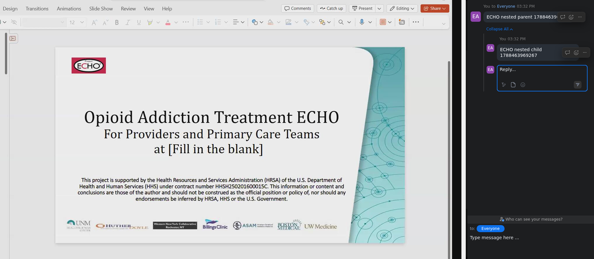

ECHO AI Assistant
Evidence-grounded help inside the live tele-mentoring session.
Joins Zoom as a visible participant. Sees shared slides, hears discussion via RTMS, and answers with PubMed plus prior Project ECHO transcripts—without leaving the meeting.
Pipeline
From live Zoom media to a citable chat reply.
The assistant is admitted from the waiting room, ingests Real-Time Media Streams, routes intent, and formats educational answers with an explicit non-advice disclaimer.
-
01
Live join
Web-client bot for private DMs and public
@ECHO AI Assistantmentions. -
02
RTMS ingest
Streaming audio and deskshare JPEGs with uniqueness filtering (~1 FPS).
-
03
Multimodal models
Whisper ASR · Qwen2.5-VL-3B for slides · Qwen3-4B-Instruct for answer formatting.
-
04
Hybrid RAG
BM25 + BGE-M3 over PubMed and 3,310 prior ECHO chunks, with citation whitelisting.
In the meeting
What clinicians can ask without leaving Zoom.
- What’s on this slide? Vision–language grounding on the shared deskshare.
- Summarize so far — late joiners catch up from streaming ASR context.
- PubMed literature — concept-sanitized queries with provenance-compliant PMIDs.
- Prior ECHO sessions — longitudinal private RAG over de-identified transcripts.
- Voice wake — “Hi Echo AI …” with energy gating and cooldown anti-spam.
- Post-session minutes — transcript, sampled slides, Q&A, and summary package.

Evaluation
Measured on real deployments and a formative stakeholder demo.
Operational logs across 55 meeting streams, plus anonymous survey feedback from Project ECHO staff after the mock opioid-use-disorder case.
0
Answered QA events
0s
Mean pipeline latency
0%
Slide frame coverage
0
Survey mean / 5 n = 4 ECHO staff
Highest-rated survey items: appeal, ease of use, and ask clarity (each 4.50). Lowest: non-disruption of live discussion (3.25) and voice-wake recognition (3.33)— matching facilitator requests for brevity budgets and invocation governance.
Artifacts
Watch the session. Read the paper. Clone the stack.
Full Penn State MediaSpace archive of the September 10, 2026 demonstration, ACL-style system demo paper, and MIT-licensed repository.